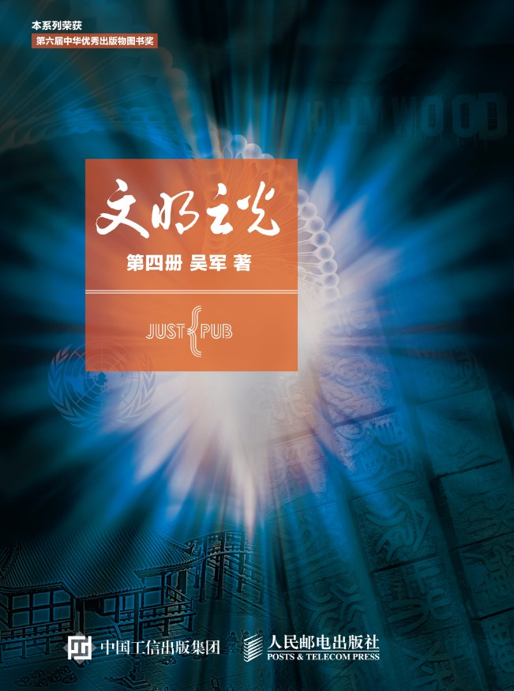

《文明之光（第四册）》

总体观点
现代文明的诞生不仅依赖科学技术单点突破的‘从0到1’，更取决于制度设计、市场机制与文化启蒙能否协同完成技术的大规模扩散与‘从1到N’的产业化重构。
权力制衡与法治规则是维持复杂现代社会长期繁荣的底层操作系统：从美国制宪会议妥协出的联邦架构，到反托拉斯法对垄断巨头的拆分分权，保障公平竞争永远优于追逐短期垄断效率。
文明的长河从不在于帝王将相的杀伐征战，而在于每一个改善人类生活质量、降低知识传播门槛、缩短物理时空距离与扩展自由边界的伟大发明与思想觉醒。
核心观点
-
1. 古腾堡活字印刷：知识平权引发欧洲宗教与科学双重革命
金属活字印刷术将书籍制作成本降低了两个数量级，直接打破了天主教会对《圣经》解释权的垄断，引发马丁·路德宗教改革并为现代科学共同体铺平道路。
对比中国雕版印刷适合汉字单字量大但难以复用，古腾堡铅活字针对26个字母标准化铸字，在短短数十年内让数百万册书籍流布全欧，催生了大众识字率。 -
2. 理性之光驱散黑暗：启蒙运动确立现代人权与自由基石
伏尔泰的宽容理性与卢梭的社会契约论，彻底动摇了君权神授的封建统治根基，确立了天赋人权、言论自由与主权在民的现代政治普世准则。
伏尔泰晚年回到巴黎受万人空巷敬仰，思想家替代国王成为全欧洲的精神领袖，标志着人类理性意识从蒙昧神学中彻底破茧而出。 -
3. 明治维新的制度改良范本：从黑船危机到全方位脱亚入欧
日本面对西方坚船利炮没有固步自封盲目排外，而是以极度务实的态度废除藩国、推行殖产兴业与文明开化，完成了非西方国家中唯一的成功现代化跃升。
福泽谕吉撰写《劝学篇》提出‘天不生人上之人，也不生人下之人’，启蒙全日本民众告别武士等级思想、拥抱现代工商科学。 -
4. 反托拉斯法案的深远救赎：以法律规制防止资本扼杀创新
第二次工业革命催生了洛克菲勒标准石油等富可敌国的托拉斯巨头；《谢尔曼反托拉斯法》与老罗斯福政府的雷霆拆分，确立了防止垄断侵害公众利益的法治红线。
老罗斯福将标准石油拆分为三十多个独立公司，不仅没有削弱美国石油产业，反而在竞争中激发了技术创新活力并让油价大幅下降。 -
5. 费城制宪会议的妥协智慧：人类历史上第一部‘谈出来的宪法’
美国五十五位开国先贤闭门百余日，没有诉诸流血政变，而是通过无数次关于大州小州利益、南北奴隶制考量与分权制衡的理性妥协，缔造了人类首部成文联邦宪法。
‘大妥协案’巧妙设计了按人口比例选举的众议院与各州平等代表的参议院，完美化解了大州和小州之间的分裂死结。 -
6. 交通工具的时空压缩：从蒸汽轮船到喷气客机重塑全球经贸
富尔顿轮船、斯蒂芬森火车、福特T型车与现代波音民航客机，以指数级效率压缩了人类跨越地理障碍的时间，使得全球化统一市场成为现实。
波音707喷气式客机的大规模商用让大西洋两岸旅行从数天的海上颠簸缩短至数小时，国际商务与大众跨国旅游真正飞入寻常百姓家。 -
7. 现代艺术的视界剧变：从古典写实到印象派与立体主义的审美解构
摄影术的发明迫使绘画告别单纯的写实记录功能；莫奈捕捉瞬息万变的光影、毕加索解构多重视角几何形体，艺术家开创了主观心性表达的新纪元。
莫奈在不同光线下连续创作数十幅《日出·印象》与《睡莲》，证明色彩并非物体固有属性而是光子跳动的感知产物，深刻启发了现代视觉哲学。
全书结构
-
第二十五章：知识使人自由——印刷术的发明及影响
对比中西印刷技术路线，剖析古腾堡金属活字、油性油墨与压榨机系统对欧洲出版业的工业化重构；探讨印刷术普及如何引发宗教改革与近代科学共同体的成型。
古腾堡圣经以工整华美的铅字排版问世，宣告手抄本贵族垄断知识的时代终结，平民首次拥有阅读经典的思想主权。 -
第二十六章：新时代的曙光——启蒙运动
以巴黎沙龙为思想风暴中心，系统梳理伏尔泰、孟德斯鸠、卢梭与狄德罗《百科全书》派的思想交锋；阐释三权分立与天赋人权如何为法国大革命与现代社会立宪。
狄德罗历时三十年编纂《百科全书》，将机械制造、手工业图纸与前沿哲学思想并列传授，用知识之光彻底扫除愚昧迷信。 -
第二十七章：近代改良的样板——从明治维新到现代日本
从佩里黑船叩关的国难危机切入，剖析倒幕运动、明治天皇颁布《五条誓文》、废藩置县与殖产兴业的实操逻辑；反思福泽谕吉思想与军国主义偏航的深层隐患。
岩仓使节团历时近年余全方位考察欧美工商业与司法教育，回国后毅然决然启动自上而下的全面制度移植。 -
第二十八章：还社会以公平——美国反托拉斯和进步运动
描绘镀金时代洛克菲勒、卡内基与摩根的托拉斯资本帝国扩张；详述记者‘扒粪运动’揭露黑幕，《谢尔曼法》《克莱顿法》出台及西奥多·罗斯福拆解托拉斯的法治历程。
塔贝尔女记者耗时数年发表深度调查报道，以翔实财务账目揭露标准石油暗箱操作，直接促成联邦最高法院做出强制拆分判决。 -
第二十九章：谈出来的国家——从制宪会议到美利坚合众国
全景还原1787年费城制宪会议的激烈辩论：大州与小州之争、南北奴隶制博弈；剖析麦迪逊、汉密尔顿《联邦党人文集》对三权分立与宪法至上原则的精湛论证。
富兰克林在会议终章指着华盛顿座椅靠背上雕刻的太阳说：‘在历经百日艰苦妥协后，我终于确信这是一轮升起的太阳，而不是落日。’ -
第三十章：缩短的距离——从蒸汽轮船到现代民航
梳理近现代交通工具演进大系：富尔顿蒸汽轮船贯通水运、斯蒂芬森火车拉动工业血脉、福特流水线让汽车普及、莱特兄弟与波音喷气机征服蓝天重构全球时空。
福特首创移动装配流水线将T型车组装时间从12小时缩短至93分钟，售价降至普通工人三个月薪水，彻底重塑了美国郊区与公路文明。 -
第三十一章：视觉的革命——从古典主义到现代艺术流派
展现19世纪至20世纪西方美术思想的裂变：达维特新古典主义的庄重、德拉克罗瓦浪漫主义的激昂、莫奈印象派的光影捕捉，以及毕加索立体主义对视觉维度的颠覆。
毕加索创作《亚威农少女》打破单一定点透视，将人物面孔与躯体同时从多个角度几何拆解重组，宣告现代立体艺术的横空出世。 -
第三十二章：创新的轨迹与现代文明的未来挑战
全书终极总结：提炼推动人类文明向前跃迁的核心动力模型——科学理性、法治分权、市场机制与包容开放；直面核武器、环境保护、人工智能对未来的全新考验。
吴军在全书末尾指出：人类文明的历史就是一部对抗熵增、追求有序与美好的历史，守护这一光芒需要每一个现代公民的理智与责任。